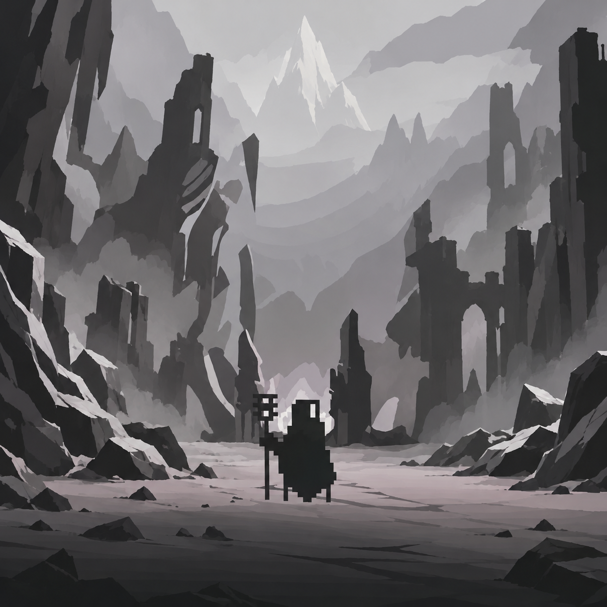

01 학력 사항
- 2027
- 학점은행제 게임프로그래밍 공학사
학위 취득 예정 - 2027
- 한국IT 전문학교 게임기획학과
졸업 예정 - 2021
- 한국IT 전문학교 게임기획학과 입학
- 2021
- (구)한림공업고등학교 졸업
GAME DESIGN PORTFOLIO
GAME DESIGNER — KIM KYOUNG TAE
플레이의 이유를 고민하고
재미를 설계하는 기획자 김경태입니다.
◇ COMBAT DESIGN ◇ MONSTER AI ◇ LEVEL DESIGN

SELECTED PROJECT / 01FLIP · TEAM PROJECT · 2025ABOUT / KIM KYOUNG TAE
도구 이름을 누르면 활용 내용과
직접 작업한 자료를 확인할 수 있습니다.
TRY · MAKE · LEARN
레벨과 콘텐츠를 기획하고, 몬스터의 행동과 전투 규칙을 구체화합니다.
기획한 내용을 직접 만들고 확인하며 배워가고 있습니다.
이름을 누르면 활용 내용을 볼 수 있습니다.
2025
FLIP ↗교내 팀 프로젝트 · 2D 플랫포머
2025
FLIP · 2D 플랫포머
SELECTED PROJECTS
기획 의도부터 플레이의 흐름까지.
직접 수행한 작업을 소개합니다.
대표 프로젝트 · 팀 프로젝트
흑백 전환에 따라 달라지는 발판과 장애물에 대응하고, 전환 타이밍을 판단하며 스테이지를 돌파하는 게임입니다.
담당 역할레벨 기획 · 콘텐츠 기획 · 에셋·사운드 리서치직접 수행한 기획과 테스트 경험을 소개합니다.
스테이지의 진행 흐름과 오브젝트 배치, 구간별 난이도 구성
진행 방식과 난이도에 맞는 오브젝트 동작과 기믹 구상
직접 플레이하며 보완하고 관람객의 실제 경험을 관찰
GAME DESIGN DOCUMENTS
보스의 전투 선택부터 몬스터의 행동 구조까지.
설계 의도와 구체적인 규칙을 확인하세요.
개인 기획 · 전투 기획서
실마엘 파편과 정화 시스템으로 플레이어가 위험과 보상을 스스로 조절하는 전투 경험을 설계했습니다.
전투 설계 항목셀프 밸런싱 · 침식과 정화 · 패턴 대응
개인 기획 · 시스템 기획서
행동 조건과 상태 전환을 정의하고, 참조 데이터와 부가 연산으로 일반 몬스터의 공통 행동 구조를 구성했습니다.
주요 설계 항목FSM · 타겟 선정 · 순찰 · 스킬 선정 · 효과 처리
개인 기획 · 레벨 기획서
적과 지형의 배치를 파악하고 유리한 상황을 만드는 경험을 중심으로, 전투와 탐험의 흐름을 구성했습니다.
동선 · 전투 학습 · 적 배치 · 탐험과 보상
로스트아크 관련 문서는 개인 포트폴리오용 기획입니다.
TOOLS & IMPLEMENTATION
엔진에서 동작을 확인하고,
구현 과정을 통해 기획의 구체성을 높였습니다.
Behavior Tree와 Blackboard로 대기·추격·공격·복귀 등의 행동을 구성하고, 데이터 테이블을 활용해 캐릭터와 스킬 정보를 관리했습니다.
Behavior Tree · Blackboard · Task · Data Table
이동과 점프, 공격, 무기 교체, 아이템 획득을 구현하며 플레이어와 오브젝트가 서로 연동되는 기본적인 게임 로직을 학습했습니다.
C# · 캐릭터 조작 · 공격 · 오브젝트 상호작용
AI & WORKFLOW
생성형 AI를 제작 보조에 활용한 경험입니다.
스폰 트리거 등 레벨 진행에 필요한 기능 구현과 작업 중 발생한 문제를 수정하는 데 활용했습니다.
입력에 따라 다음 공격이 이어지는 기본 콤보를 구현하고 확인하는 과정을 학습했습니다.
자료 조사, 아이디어 구체화, 초안 검토와 수정에 활용하고 기획 의도에 맞게 내용을 조정했습니다.
CONTACT / KIM KYOUNG TAE
게임 기획자 김경태
k_y_tae@naver.com ↗